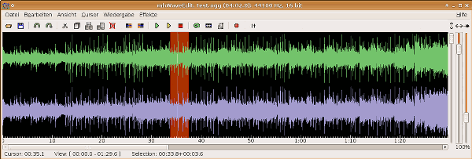
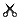
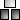
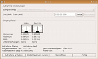

mhWaveEdit
Dieser Artikel wurde für die folgenden Ubuntu-Versionen getestet:
Ubuntu 14.04 Trusty Tahr
Zum Verständnis dieses Artikels sind folgende Seiten hilfreich:
mhWaveEdit  ist ein ursprünglich für das Wave-Format (.wav) konzipierter Audio-Editor. Wurde mhWaveEdit mit Zugriff auf die entsprechenden Bibliotheken kompiliert, können verschiedene andere Dateiformate bearbeitet werden, unter anderem Ogg, Flac, MP3 und Rohdaten (.raw). Ist MPlayer installiert, können alle Formate ausgelesen werden, die auch der MPlayer abspielt, in diese Formate kann jedoch nicht immer zurückgespeichert werden.
ist ein ursprünglich für das Wave-Format (.wav) konzipierter Audio-Editor. Wurde mhWaveEdit mit Zugriff auf die entsprechenden Bibliotheken kompiliert, können verschiedene andere Dateiformate bearbeitet werden, unter anderem Ogg, Flac, MP3 und Rohdaten (.raw). Ist MPlayer installiert, können alle Formate ausgelesen werden, die auch der MPlayer abspielt, in diese Formate kann jedoch nicht immer zurückgespeichert werden.
mhWaveEdit kann zur Aufnahme, zum Schneiden und zum Bearbeiten von Audio-Daten verwendet werden. Von einfachen Effekten, wie Ein- und Ausblenden oder dem Herunter-Mischen von Stereo auf Mono bis hin zu LADSPA-Unterstützung wird eine Fülle von Funktionen bereitgestellt. Durch die deutschprachigen Menüs und die ausführliche englische Dokumentation ist das Programm für Einsteiger wie fortgeschrittene Anwender gleichermaßen interessant.
Der besondere Vorteil von mhWaveEdit gegenüber vergleichbaren Programmen (wie beispielsweise Audacity) liegt in der Unterstützung von jack, der überschaubaren Bedienoberfläche und dem stabilen Betrieb auch in mehreren Instanzen.
Installation¶
 mhWaveEdit kann aus den Ubuntu-Paketquellen installiert werden.
Folgendes Paket muss installiert werden [1]:
mhwaveedit (universe)
 mit apturl
mit apturl
Paketliste zum Kopieren:
sudo apt-get install mhwaveedit
sudo aptitude install mhwaveedit
Möchte man eine eventuell aktuellere Version erhalten, muss aus dem Quellcode kompiliert werden. Das Kompilieren bietet außerdem die Möglichkeit, ein an die persönlichen Bedürfnisse angepasstes und dadurch schlankeres Programm zu erstellen. Hilfe dazu findet man im Artikel mhWaveEdit kompilieren.
Bedienung¶
mhWaveEdit kann direkt als mhwaveedit gestartet werden. [2]
Über die Menüleiste des Programms ("Hilfe -> Dokumentation") oder über F1 wird die eingebaute Hilfe aufgerufen, in der unter anderem Tastenkürzel nachgesehen werden können.
| Symbol | Tastenkürzel | Bedeutung |
 | Strg + O | Lade Datei vom Speichermedium |
| Strg + S | Speichere die aktuelle Datei ab | |
| Strg + U | Markierung speichern als... | |
| Strg + R | Rückgängig: Nehme die letzte Änderung zurück | |
| Wiederhole die letzte "Rückgängig"-Aktion | ||
|  | Strg + X | Schneide die aktuelle Markierung raus |
| Strg + C | Kopiere die aktuelle Markierung | |
|  | Strg + V | Füge an der Cursor-Position ein |
| Einfügen, überschreiben der Daten hinter der Cursor-Position | ||
 | Strg + D | Lösche die Markierung |
| Setzte den Beginn der Markierung an die Cursor-Position | ||
| Setzte das Markierungsende an die Cursor-Position | ||
| Spiele ab der Cursor-Position | ||
| Spiele markierten Bereich | ||
 | Wiedergabe stoppen | |
| Schleifen-Modus (immer wieder von vorne abspielen) | ||
| Folge dem Cursor bei der Wiedergabe | ||
| Automatische Rückkehr zum Wiedergabebeginn | ||
| F12 | Aufnahme | |
| Starte Mixer |
Aufnahme¶
 Der Aufnahme-Dialog wird über den Menüleisten-Eintrag "Wiedergabe -> Aufnehmen" oder F12 geöffnet. Der Audio-Treiber wird beim Start des Programms automatisch erkannt, wurde in den Programm-Einstellungen nichts anderes eingestellt.
Konfigurations-Tipps¶
Mixer starten¶
Aus mhWaveEdit heraus kann über die Schaltfläche ("Starte Mixer") ein Mixer nach Vorgabe in den Einstellungen ("Bearbeiten -> Einstellungen" Reiter "Andere") gestartet werden. Die passenden Befehle für das Mischpult des eigenen Desktop und für einige Alternativen wurden im Artikel Mixer zusammengetragen.
- Erstellt mit Inyoka
-
 2004 – 2017 ubuntuusers.de • Einige Rechte vorbehalten
2004 – 2017 ubuntuusers.de • Einige Rechte vorbehalten
Lizenz • Kontakt • Datenschutz • Impressum • Serverstatus -
Serverhousing gespendet von